广播
共 155 个月
3458 条广播
其中 2250 条带正文
广播发布后不可编辑，所以每条都是那一刻的原话。
2017-06-29 14:21:47
豆瓣原页
 收藏游戏到豆列 游戏购买小账本 刺客信条：起源 Assassin’s Creed Origins
收藏游戏到豆列 游戏购买小账本 刺客信条：起源 Assassin’s Creed Origins
支持一下，挺过维旺迪收购，
下定日期： 17-6-29
订单号码： 02142237
总额： ¥198.40
2017-06-28 13:42:37
豆瓣原页
看过 超感猎杀 第二季 / Sense8 Season 2 ★★★★★
设定真是带感啊，虽然剧情不是那么紧凑，但是不反感，听说第三季被砍了，赶紧去请了个愿，立个flag，如果有第三季我就入netflix会员
2017-06-27 20:48:52
豆瓣原页
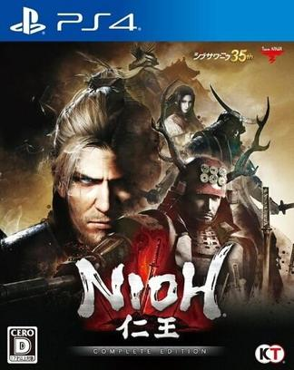
玩过 仁王 ★★★★★
可惜PS4独占，视频通关（黑桐谷歌），Okatsu (お勝)戏份出乎意料的少啊 233
2017-06-27 17:37:13
豆瓣原页
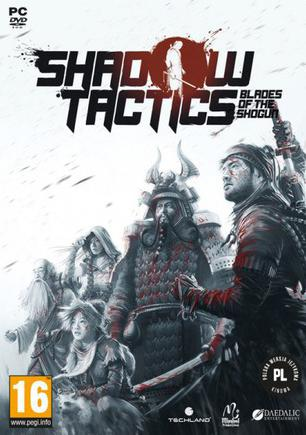
玩过 影子战术：将军之刃 Shadow Tactics: Blades of the Shogun ★★★★★
做的相当好，盟军敢死队的玩法就不用多说了，确实是时隔多年重出江湖的感觉 _(:з」∠)_ 看了Cirroc的通关视频，真是操作犀利
2017-06-24 12:28:51
豆瓣原页
收藏游戏到豆列 游戏购买小账本 围攻 Besiege (2020)
夏促：
Transaction ID: 2387320516493381317
Payment Method: Steam Wallet
Purchased: Jun 24, 2017 @ 1:42pm
Besiege - ¥ 18
Subtotal ¥ 31
Disco…
2017-06-24 12:27:26
豆瓣原页
 收藏游戏到豆列 游戏购买小账本 正当防卫3 Just Cause 3
收藏游戏到豆列 游戏购买小账本 正当防卫3 Just Cause 3
sbeam夏促，之前玩盗版很对胃口~
Transaction ID: 2387320516484549176
Payment Method: Steam Wallet
Purchased: Jun 23, 2017 @ 10:19am
Just Cause 3 XL - ¥…
2017-06-23 19:59:55
豆瓣原页
看过 变形金刚5：最后的骑士 / Transformers: The Last Knight ★★★★☆
剧情比较老套了，特效还是很棒，英格兰的那块航拍真是stunning！（感谢指南针赞助电影票
2017-06-23 19:59:32
豆瓣原页
看过 变形金刚5：最后的骑士 / Transformers: The Last Knight ★★★★☆
剧情比较老套了，特效还是很棒，英格兰的那块航拍真是stunning！
2017-06-21 23:25:04
豆瓣原页
在看 超感猎杀 第二季 / Sense8 Season 2
第0集也是够劲爆的（鼻血
2017-06-18 19:12:38
豆瓣原页
看过 速度与激情8 / The Fate of the Furious ★★★★★
这集太虐了，变态杀人魔Seth！！！然后私生子是什么鬼 =。= 特效还是很棒
2017-06-18 12:06:12
豆瓣原页
看过 摔跤吧！爸爸 / Dangal ★★★★★
父亲节我竟然在看这个，虽然猜到结局了，但是还是太煽情了！
2017-06-16 17:48:16
豆瓣原页
玩过 雨的边缘 Ame no Marginal -Rain Marginal- ★★★★☆
吐槽下，steam版竟然自带narcissu 1st =。= 练了5小时英语阅读，这款游戏是描写人的孤独的，竟然很有真情实感：）结局强行happy ending，还是好评
2017-06-16 11:42:34
豆瓣原页
看过 速度与激情7 / Furious 7 ★★★★★
引入高科技了这集，阿联酋那个穿越三栋skycrapers，真是太精彩了！
2017-06-13 11:32:51
豆瓣原页
 收藏游戏到豆列 游戏购买小账本 奇异人生：暴风前夕 Life is Strange: Before The Storm
收藏游戏到豆列 游戏购买小账本 奇异人生：暴风前夕 Life is Strange: Before The Storm
不用说了，对口味
Life is Strange: Before The Storm - ¥ 53
Life Is Strange: Before The Storm Deluxe Upgrade - ¥ 31
小计 ¥ 92
折扣 ¥ -8 (-8%)
总计 ¥ 84
2017-06-12 21:35:45
豆瓣原页
看过 速度与激情6 / Furious 6 ★★★★☆
不够有激情，然后这个剧情的选择也是够困难的 =。= 可惜的是那个女的美国大兵挂了
2017-06-11 23:23:26
豆瓣原页
在玩 雨的边缘 Ame no Marginal -Rain Marginal-
先把短的玩掉吧
2017-06-11 23:21:49
豆瓣原页
说
突然发现豆瓣游戏出了一个“在玩”选项，好顶赞啊！
2017-06-11 22:47:47
豆瓣原页
上传了1张照片到 奇异人生 Life is Strange 的 相册
2017-06-11 22:31:41
豆瓣原页
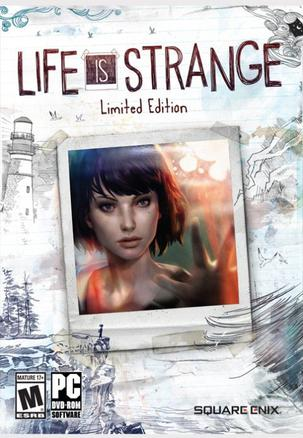
玩过 奇异人生 Life is Strange ★★★★★
作者太用心了，每一张海报都做的很细致，花了21小时打通关，全成就达成，确实是非常棒的游戏，剧情也是出乎意料，二选一的结局果断是全都选了（开俩存档），真是棒啊，期待续集
2017-06-11 20:38:53
豆瓣原页
看过 速度与激情5 / Fast Five ★★★★★
这集太精彩了！！！！！！！！！！！！！！！！！！！！！！！！！！！！！！
2017-06-10 23:38:56
豆瓣原页
收藏游戏到豆列 游戏购买小账本 雨的边缘 Ame no Marginal -Rain Marginal-
2腿入得，看介绍说是这个Narcissu作的者弄得，果断就入了，希望是忧郁系
2017-06-10 23:37:31
豆瓣原页
玩过 星之光 STELLIGHTS ★★★☆☆
很平凡的音乐手游，音乐圆盘手感不是很好，尤其是从中间出来的音符速度总觉得怪怪的，估计不该用线性的速度，带点加速度会舒服些，音乐也很平庸啊 =。= 实在是提不起兴趣了
2017-06-10 23:35:08
豆瓣原页
玩过 兰空 VOEZ ★★★★☆
登录系统有fatal BUG，虽然登录选项很多；音乐还不错，启动加载太久啦；
2017-06-09 17:02:25
豆瓣原页
看过 速度与激情4 / Fast & Furious ★★★★★
这部精彩多了，高科技也用上了，结局竟然有越狱的感觉，很赞！
2017-06-07 18:42:03
豆瓣原页
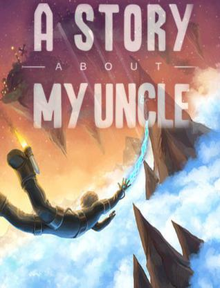
收藏游戏到豆列 游戏购买小账本 叔叔的传说 A Story About My Uncle
4腿收的
2017-06-07 16:28:16
豆瓣原页
收藏游戏到豆列 游戏购买小账本 水仙3 narcissu 3rd -Die Dritte Welt- (2009)
20腿HB包补票，Narcissu 10th Anniversary Anthology Project + SeasonPass
2017-06-07 12:01:29
豆瓣原页
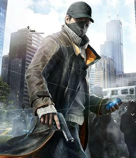
想看 看门狗 / Watch Dogs
想看但是不打算去电影院看，因为看门狗1的是我第一个通关的ARPG，剧情实在是太棒了；看门狗2也通关了，但是剧情没1好；这个电影我表示不是很看好，因为大量地在还原游戏中的场景，感觉很没有必要
2017-06-07 11:00:54
豆瓣原页
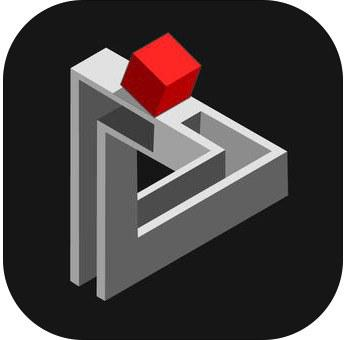
玩过 错觉 hocus ★★★★☆
同样是利用视觉错觉的游戏；第一眼看成了Focus，胡建人说Focus就编程了Hocus，暴露了词汇量的不足（逃
2017-06-07 10:50:57
豆瓣原页
用过 Lanota (iPhone / iPad) ★★★★☆
挺像deemo的，但是这个游戏的这个转轮一会上一会下，有点让人怀疑人生（怀疑记忆力
2017-06-05 20:11:47
豆瓣原页
想看 快乐飞行 / ハッピーフライト
受推荐之mark
2017-06-05 20:08:42
豆瓣原页
想看 大空港2013
2017-06-01 11:24:50
豆瓣原页
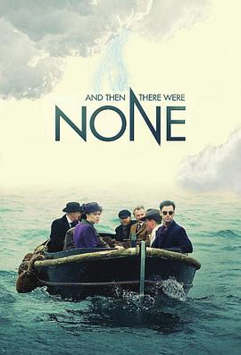
看过 无人生还 / And Then There Were None ★★★★★
非常像《八面埋伏》，但是这个结局真的是"And then there were none"
2017-05-31 18:24:22
豆瓣原页
玩过 小兵步枪 RUNNING WITH RIFLES ★★★★☆
很微妙的感觉，挺好玩的，也有点盟军敢死队的感觉，但是是火拼的那种
2017-05-31 12:30:35
豆瓣原页
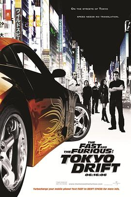
看过 速度与激情3：东京漂移 / The Fast and the Furious: Tokyo Drift ★★★★★
这部观赏性很强啊！
2017-05-31 09:22:21
豆瓣原页
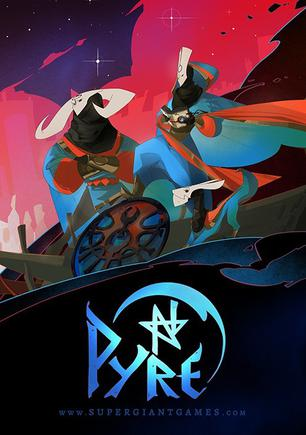
收藏游戏到豆列 游戏购买小账本 柴堆 Pyre
Transaction ID: 1158961648605223341
Payment Method: Steam Wallet
Purchased: May 31, 2017 @ 10:13am
Pyre - ¥ 61
Subtotal ¥ 68
Discount ¥ …
2017-05-30 18:48:07
豆瓣原页
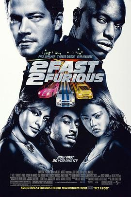
看过 速度与激情2 / 2 Fast 2 Furious ★★★☆☆
看到费南多真是开心，但是剧情很老套，相当老套
2017-05-30 18:24:08
豆瓣原页
看过 速度与激情 / The Fast and the Furious ★★★★☆
感觉一般啊，不太感冒，可能片子太老的原因，车速确实是够快的
2017-05-29 20:14:58
豆瓣原页
 玩过 战地1 Battlefield 1 ★★★★☆
玩过 战地1 Battlefield 1 ★★★★☆
这种类型不喜欢，还是喜欢潜入类型的，游戏做的确实特别好
2017-05-28 15:48:38
豆瓣原页
玩过 新仙剑奇侠传 新仙劍奇俠傳 ★★★★★
小学的时候玩过正版的，同学借的，但是当时玩的时候还需要插光盘，没玩完，今天才知道原来是高清重制版，画面比95版好太多啊，结尾也很有爱：）我妥妥成了如月党
2017-05-28 14:57:38
豆瓣原页
玩过 仙剑奇侠传 仙劍奇俠傳 ★★★★★
刚刚通关，做的太好了，时至今日仍极具可玩性，而且当时就已经做到了环境生物的互动，狗啊猫啊什么的，但在这几年的现代版本却未有实现。不愧经典！ | cubejoy做活动免费领正版仙剑、轩辕剑啥的，下下来玩了下，感觉竟然很好玩！
2017-05-28 09:13:24
豆瓣原页
想玩 仙剑奇侠传 仙劍奇俠傳
cubejoy做活动免费领正版仙剑、轩辕剑啥的，下下来玩了下，感觉竟然很好玩！
2017-05-27 21:17:56
豆瓣原页
看过 声之形 / 聲の形 ★★★★★
画面太美了，配音特别棒、很有实感！想起来小学时我也欺负过别人，但是是男生，
2017-05-25 23:37:38
豆瓣原页
想玩 江湖英烈传
我感觉这个就是我2001年玩的这辈子的第一个武侠游戏，当时的记忆实在是太少了，只记得在山上、楼宇间做什么事情迟到了，然后被罚出门找什么东西，然后出门之后各种土匪啊什么的，当时一直没找到，然后就没玩了，有机会还是要检查下这个是不是当年的那款游戏
2017-05-25 22:00:18
豆瓣原页
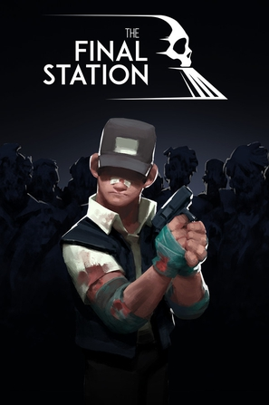
玩过 最后一站 The Final Station ★★★★☆
挺不错的故事，像素风格的打僵尸游戏
2017-05-25 18:54:47
豆瓣原页
看过 越狱特别篇：最后一越 / Prison Break: The Final Break ★★★★★
好看，感动
2017-05-25 17:23:35
豆瓣原页
看过 越狱 第四季 / Prison Break Season 4 ★★★★★
死人复活，活人自动死，死了30年的人复活，30年的兄弟原来是假的，诸如此类，各种雷人剧情，但是，我还是要给五星
2017-05-22 17:09:12
豆瓣原页
 玩过 冒险岛2 메이플스토리2 ★★★★★
玩过 冒险岛2 메이플스토리2 ★★★★★
赶上了最后一天，画面做的很精美，满分！腾讯排队服务器0分不谢
2017-05-21 17:15:31
豆瓣原页
想看 黄海 / 황해
2017-05-21 17:12:44
豆瓣原页
想看 摔跤吧！爸爸 / Dangal
2017-05-21 17:10:56
豆瓣原页
想看 哭声 / 곡성
2017-05-20 16:23:58
豆瓣原页
收藏游戏到豆列 游戏购买小账本 耻辱2 Dishonored 2 (2016)
Dishonored 2 - Limited Plus Edition - PC in EB games, $28 included
2017-05-20 16:23:51
豆瓣原页
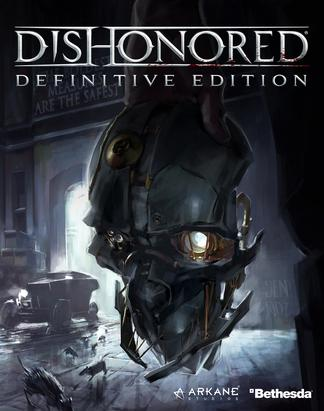
收藏游戏到豆列 游戏购买小账本 耻辱 Dishonored
Dishonored 2 - Limited Plus Edition - PC in EB games, $28 included
2017-05-19 22:04:48
豆瓣原页
看过 异星觉醒 / Life ★★★★☆
结局细思恐极
2017-05-15 17:36:22
豆瓣原页
想看 异星觉醒 / Life
2017-05-15 17:33:17
豆瓣原页
看过 异形：契约 / Alien: Covenant ★★★★☆
剧情走向基本在预测之内，片尾又在下集预告了，画面很美！
2017-05-14 20:08:53
豆瓣原页
在看 越狱 第四季 / Prison Break Season 4
死人复活，活人自动死，这就是第一集的故事梗概。。。
2017-05-14 12:56:34
豆瓣原页
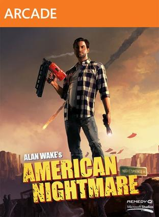
收藏游戏到豆列 游戏购买小账本 心灵杀手：美国噩梦 Alan Wake’s American Nightmare
bundle里面的：
Alan Wake Bundle (Summer 2012) - ¥ 11
Subtotal ¥ 112
Discount ¥ -101 ( -90%)
Total ¥ 11
2017-05-14 12:56:09
豆瓣原页
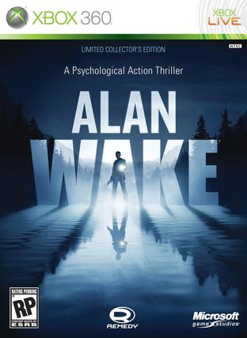
想玩 心灵杀手 Alan Wake
作为恐怖游戏的入门作吧，挑战心理承受能力！
2017-05-14 12:55:36
豆瓣原页
收藏游戏到豆列 游戏购买小账本 心灵杀手 Alan Wake
Alan Wake Bundle (Summer 2012) - ¥ 11
Subtotal ¥ 112
Discount ¥ -101 ( -90%)
Total ¥ 11
2017-05-09 12:41:30
豆瓣原页
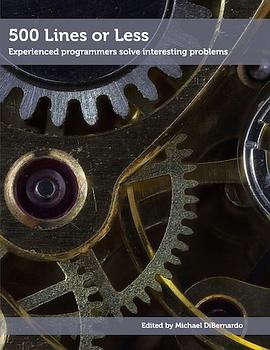
想读 500 Lines or Less
2017-05-08 23:18:35
豆瓣原页
看过 惊天危机 / White House Down ★★★★☆
感觉还不错
2017-05-07 20:26:15
豆瓣原页
 看过 爱乐之城 / La La Land ★★★★★
看过 爱乐之城 / La La Land ★★★★★
音乐真心好听，剧情看起来也很轻松；电影说的是dream和love之间抉择时，哎等下，我好像既没有dream也没有love诶 _(:з」∠)_ 电影很棒！
2017-05-07 10:04:21
豆瓣原页
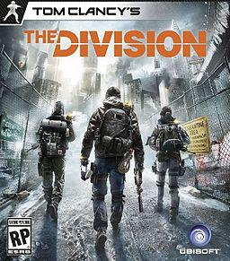
玩过 全境封锁 Tom Clancy’s The Division ★★★★☆
UI满分，游戏性3分，均分4分
2017-05-06 12:30:32
豆瓣原页
想看 越狱 第四季 / Prison Break Season 4
不知道还能有什么故事。。
2017-05-06 12:28:21
豆瓣原页
看过 越狱 第三季 / Prison Break Season 3 ★☆☆☆☆
Sara领便当了！！！！！！！！！！！！！！！！！！！！！！！
2017-05-04 19:42:56
豆瓣原页
想看 变形金刚5：最后的骑士 / Transformers: The Last Knight
22 June, 2017 (26 special)
2017-05-04 19:37:33
豆瓣原页
想看 加勒比海盗5：死无对证 / Pirates of the Caribbean: Dead Men Tell No Tales
凸凹25 May, 2017上映，29特价:P
2017-05-04 14:28:32
豆瓣原页
在看 越狱 第三季 / Prison Break Season 3 ★☆☆☆☆
Sara领便当了！！！！！！！！！！！！！！！！！！！！！！！
2017-05-04 14:23:52
豆瓣原页
看过 越狱 第二季 / Prison Break Season 2 ★★★★★
甜
2017-05-02 11:37:18
豆瓣原页
想玩 塞伯利亚之谜 Syberia
没想到2002年做的比04年做的轩辕剑苍之涛都好
2017-05-02 11:21:35
豆瓣原页
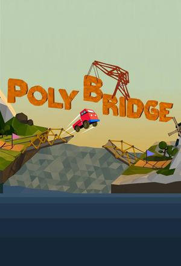
玩过 桥梁构造者 Poly Bridge ★★★★☆
之前在chrome上玩过一个类似的游戏，不过这个加大难度了 _(:з」∠)_
2017-05-02 11:20:08
豆瓣原页
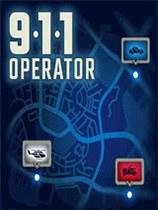
玩过 911接线员 911 Operator ★★★★☆
竟然可以下载本地地图，一下子身边都是犯罪案件了
2017-05-02 09:08:17
豆瓣原页
收藏游戏到豆列 游戏购买小账本 神偷 Thief (2014)
Thief: Master Thief Edition Asia - ¥ 18
Subtotal ¥ 90
Discount ¥ -72 ( -80%)
Total ¥ 18
不错啊竟然没锁区
2017-04-30 00:46:37
豆瓣原页
看过 越狱 第一季 / Prison Break Season 1 ★★★★★
为了看越狱我看完一整季了：）结果
2017-04-28 17:03:47
豆瓣原页
看过 人间失格 / 人間失格 ★★★☆☆
没有小说带给我的代入感好，首先因为我吃藕：）
2017-04-27 23:54:08
豆瓣原页
 想看 血族 第四季 / The Strain Season 4
想看 血族 第四季 / The Strain Season 4
这一集如果熊孩子能拯救世界，我就相信他是隐藏的真正主角
2017-04-27 23:48:00
豆瓣原页
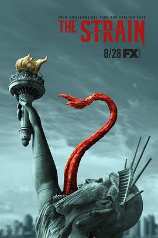
看过 血族 第三季 / The Strain Season 3 ★★★★★
太好看了，就和《寒蝉·解》的性质一样，谜团一个一个解开了！然后就是最后一集太揪心了！！！！！！！第四季必看
2017-04-24 19:34:03
豆瓣原页
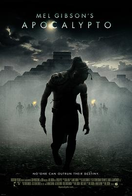
想看 启示 / Apocalypto
2017-04-24 17:19:00
豆瓣原页
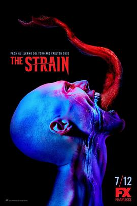
看过 血族 第二季 / The Strain Season 2 ★★★★☆
后续故事逐渐有意思了
2017-04-23 20:54:54
豆瓣原页
玩过 正当防卫3 Just Cause 3 ★★★★★
太好玩了，和幽灵行动荒野很像，可以玩100+小时，而且是农村包围城市的感觉，很不错已删（人生苦短啊
2017-04-23 17:09:20
豆瓣原页
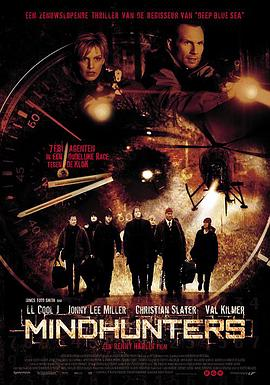
看过 八面埋伏 / Mindhunters ★★★★★
当时高二的时候在新东方上英语冲刺班的时候看的，相当不错
2017-04-23 16:59:34
豆瓣原页
想看 无人生还 / And Then There Were None
2017-04-20 20:12:14
豆瓣原页
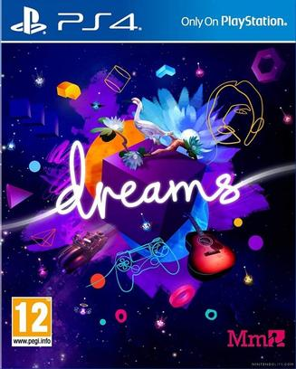
想玩 梦境宇宙 Dreams Universe™
画面很美
2017-04-20 19:42:53
豆瓣原页
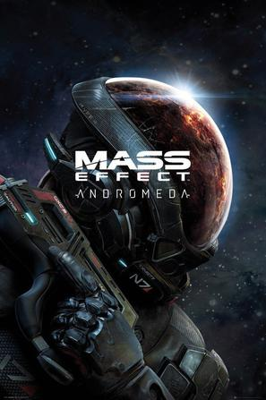
想玩 质量效应：仙女座 Mass Effect : Andromeda
肯定比无人深空好，无人深空甚至连星球都没有 =。=
2017-04-20 19:08:34
豆瓣原页
想看 极品基老伴 第一季 Vicious Season 1 (2013)
mark下，主演演过老年福尔摩斯的
2017-04-20 12:45:32
豆瓣原页
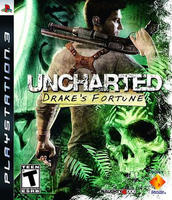
玩过 神秘海域：德雷克的宝藏 Uncharted: Drake’s Fortune ★★★★☆
10年前的作品真是厉害啊
2017-04-18 20:29:58
豆瓣原页
玩过 枪炮世界 World of Guns: Gun Disassembly ★★★★★
厉害厉害，拆的我连家都不认识
2017-04-18 20:01:29
豆瓣原页
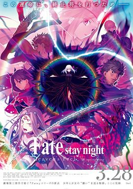
想看 命运之夜——天之杯Ⅲ：春之歌 / 劇場版 Fate/stay night [Heaven’s Feel] III. spring song
OMG 这个好遥远啊(；´д｀)ゞ
2017-04-18 20:00:16
豆瓣原页
想看 命运之夜——天之杯Ⅱ：迷失之蝶 / 劇場版 Fate/stay night [Heaven’s Feel] II. lost butterfly
毕业季啊(灬°ω°灬)
2017-04-18 19:59:29
豆瓣原页
![命运之夜——天之杯Ⅰ：恶兆之花 / 劇場版 Fate/stay night [Heaven’s Feel] I. presage flower](../../../covers/p2545044503.jpg) 想看 命运之夜——天之杯Ⅰ：恶兆之花 / 劇場版 Fate/stay night [Heaven’s Feel] I. presage flower
想看 命运之夜——天之杯Ⅰ：恶兆之花 / 劇場版 Fate/stay night [Heaven’s Feel] I. presage flower
凸凹一定会上映的 (>ω･*)ﾉ
2017-04-18 15:41:06
豆瓣原页
看过 金刚狼3：殊死一战 / Logan ★★★★☆
金属手开头不杀掉真是有说不完的故事啊
2017-04-17 23:52:20
豆瓣原页
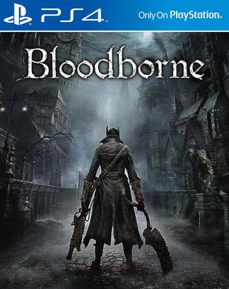
玩过 血源诅咒 Bloodborne ★★★☆☆
在墨尔本正好看到老哥室友在玩，个人兴趣不大~
2017-04-17 23:45:10
豆瓣原页
玩过 猎人：荒野的召唤 theHunter: Call of the Wild
打猎真难，追一只半残的鹿追了2小时 orz
2017-04-11 11:51:59
豆瓣原页
收藏游戏到豆列 游戏购买小账本 盟军敢死队3 (2003)
3部合集：Gamersgate
From amount $2.24 AUD
To amount $1.61 USD
Exchange rate: 1 AUD = 0.721145 USD
2017-04-11 11:49:19
豆瓣原页
收藏游戏到豆列 游戏购买小账本 盟军敢死队2：勇往直前 Commandos 2: Men of Courage (2001)
3部合集：Gamersgate
From amount $2.24 AUD
To amount $1.61 USD
Exchange rate: 1 AUD = 0.721145 USD
2017-04-11 11:49:04
豆瓣原页
收藏游戏到豆列 游戏购买小账本 盟军敢死队：使命召唤 Commandos: Beyond the Call of Duty (1999)
3部合集：Gamersgate
From amount $2.24 AUD
To amount $1.61 USD
Exchange rate: 1 AUD = 0.721145 USD
2017-04-11 11:48:54
豆瓣原页
收藏游戏到豆列 游戏购买小账本 盟军敢死队：深入敌后 Commandos: Behind Enemy Lines (1998)
3部合集：Gamersgate
From amount $2.24 AUD
To amount $1.61 USD
Exchange rate: 1 AUD = 0.721145 USD
2017-04-09 19:09:12
豆瓣原页
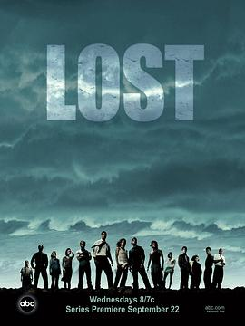
想看 迷失 第一季 / Lost Season 1
2017-04-09 19:05:53
豆瓣原页
想看 越狱 第一季 / Prison Break Season 1
来追美剧了，春季番兴趣不大，再加上京阿尼也没新作（《紫罗兰永恒花园》没消息）
2017-04-04 14:48:24
豆瓣原页
 收藏游戏到豆列 游戏购买小账本 智慧之海 ABZÛ
收藏游戏到豆列 游戏购买小账本 智慧之海 ABZÛ
Transaction ID: 367448305291080471
Payment Method: Steam Wallet
Purchased: Apr 4, 2017 @ 4:16pm
ABZU - ¥ 20
Subtotal ¥ 68
Discount ¥ -48…
2017-04-03 17:29:55
豆瓣原页
想看 追踪长尾豹马修 / Sur la piste du Marsupilami
2017-04-03 17:27:10
豆瓣原页
想看 私奔B计划 / Un plan parfait
2017-04-03 14:31:06
豆瓣原页
 看过 攻壳机动队 / Ghost in the Shell ★★★★★
看过 攻壳机动队 / Ghost in the Shell ★★★★★
画面太美了，剧情倒是没有什么惊喜，节奏还可以，这回能听懂85%了233 特价场A$6.5
2017-04-02 19:34:55
豆瓣原页
想看 嫌疑人X的献身
2017-04-02 18:23:21
豆瓣原页
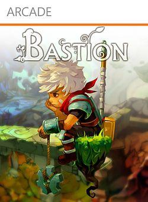
收藏游戏到豆列 游戏购买小账本 堡垒 Bastion
Transaction ID: 367448305277809073
Payment Method: WeChat
Purchased: Apr 2, 2017 @ 7:46pm
Bastion - ¥ 7
Subtotal ¥ 28
Discount ¥ -21 ( -…
2017-04-02 15:10:19
豆瓣原页
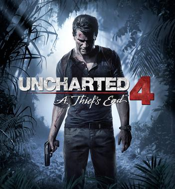
玩过 神秘海域4：盗贼末路 Uncharted 4: A Thief’s End ★★★★★
因为没有四公主，一直不知道这家公司游戏做得这么好，剧情和游戏性都太强了，视频通关打卡，full of spectaculars and impressions
2017-04-01 16:05:09
豆瓣原页
看过 Rewrite 第二季 Moon篇/Terra篇 / Rewrite 2nd シーズン Moon編 / Terra編 ★★★★☆
结局蛮喜欢的
2017-03-31 18:36:36
豆瓣原页
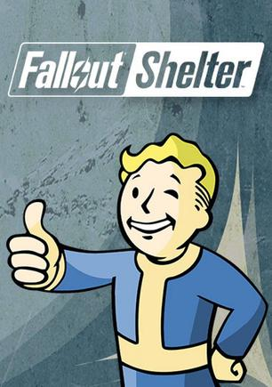
玩过 辐射：避难所 Fallout Shelter ★★★☆☆
丢个male在living room，然后一个female一个female地丢进去，出来全肚子大了，好假。。。
2017-03-31 14:41:03
豆瓣原页
想看 攻壳机动队 / Ghost in the Shell
擦，凸凹上映了！下周一去看特价场，声之形也是下周上映，但是下周神忙啊！！ XD
2017-03-30 14:04:20
豆瓣原页
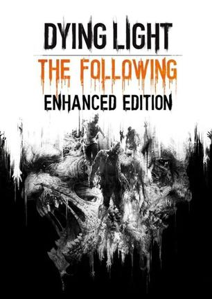
想玩 消逝的光芒：加强版 Dying Light Enhanced Edition
据说最好的zombie game？mark
2017-03-30 11:28:53
豆瓣原页
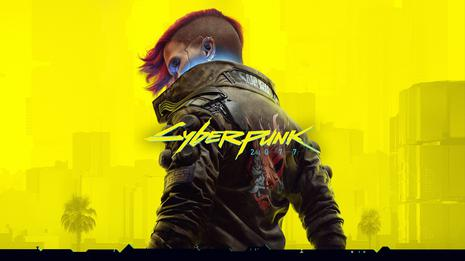
想玩 赛博朋克 2077 Cyberpunk 2077
高科技风的，先马再说
2017-03-26 14:17:17
豆瓣原页
看过 从前有座灵剑山2 / 霊剣山 叡智への資格 ★★★★★
支持国漫，虽然不足还有很多，但是OP、ED还是一如既往地良心
2017-03-26 14:15:21
豆瓣原页
看过 狐妖小红娘 ★★★★☆
还可以，就是OP、ED越来越难听
2017-03-26 13:52:20
豆瓣原页
 看过 风夏 / 風夏 ★★★☆☆
看过 风夏 / 風夏 ★★★☆☆
我竟然还是看完了，还是这个分，但是，我还是看完了
2017-03-24 08:32:39
豆瓣原页
玩过 最后生还者 重制版 The Last of Us Remastered ★★★★★
Impressive
2017-03-20 19:52:41
豆瓣原页
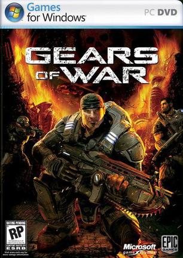
想玩 战争机器 Gears of War
2017-03-18 10:35:51
豆瓣原页
想看 刀剑神域：序列之争 / 劇場版 ソードアート・オンライン -オーディナル・スケール-
土澳竟然2月就上映了，今天才知道，但是兴趣不大，还是等下个月去看声之形
2017-03-18 09:57:29
豆瓣原页
想玩 血源诅咒 Bloodborne
2017-03-17 15:24:33
豆瓣原页
想看 声之形 / 聲の形
凸凹4月8号上映，11号去看特价场 V~
2017-03-15 21:27:32
豆瓣原页
想玩 最后生还者 重制版 The Last of Us Remastered
评分这么高！不过四公主独占了
2017-03-11 18:25:47
豆瓣原页
看过 罗曼蒂克消亡史 ★★★☆☆
这个片子英文名叫the wasted time，我觉得我看电影的这段时间就是the wasted time，片尾LOGO出现的时候才恍然大悟，谢谢提醒
2017-03-10 23:32:25
豆瓣原页
看过 九条命 / Nine Lives ★★★★★
虽然我这2个月来被猫抓了无数次，但是我还是觉得猫好可爱啊 _(:з」∠)_
2017-03-10 15:28:07
豆瓣原页
 玩过 缺氧 Oxygen Not Included ★★★★☆
玩过 缺氧 Oxygen Not Included ★★★★☆
玩法和饥荒很像，没想到刚出生的地方也缺氧 _(:з」∠)_ 最后大家缺氧而死 | 三大妈真是牛。。。测试包都弄出来了
2017-03-09 17:03:03
豆瓣原页
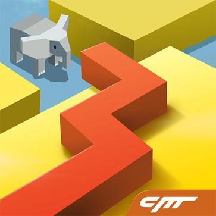
玩过 跳舞的线 Dancing Line ★★★★★
脑洞超大、强烈推荐！
2017-03-04 14:44:53
豆瓣原页
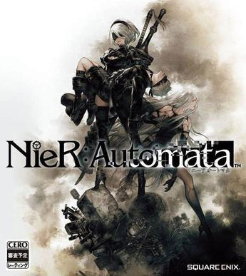
收藏游戏到豆列 游戏购买小账本 尼尔：机械纪元 NieR:Automata
AU$ 59.99, From: Square Enix Europe Online Store
没忍住（捂脸
2017-03-02 19:15:13
豆瓣原页
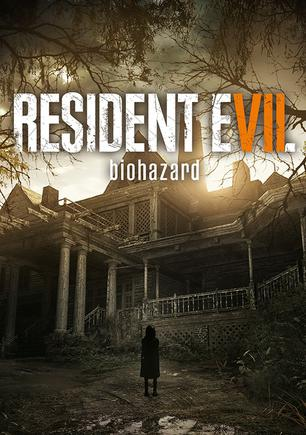
玩过 生化危机7 バイオハザード7 レジデント イービル ★★★★★
沃日，玩下去的话我会死的，太吓人了！！！！！！！！！！！！！！！！！！！！！！！！！！！！！！！！！！！！！！！！！！！！！！！！！！！！！！！！！！！！！！！！！！！！！！！！！！！！！！！！！！！！！！！！！！！！！！！！！！！！！！！！！！！！！！！！！…